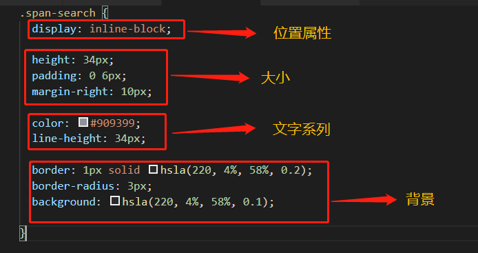

CSS代码重构的基本方法——提高可维护性的方法
提高CSS代码的可维护性，简单的说就是要让开发人员易于理解CSS代码，容易去修改它，不会破坏原有的功能。下面说说一些常用的手段。
1、命名与备注
命名是提高代码可读性的第一步，也是及其重要的一步。很多人都有这样的体会：命名是写代码中最让程序员头疼的事情之一，尤其是对母语非英语的开发人员来说，要找一个合适贴切的名字并不容易。提高自己命名的能力，可以多看看别人的代码。
下面是CSS中的一些命名相关的建议：
头：header
内容：content/container
尾：footer
导航：nav
侧栏：sidebar
栏目：column
页面外围控制整体佈局宽度：wrapper
左右中：left right center
登录条：loginbar
标志：logo
广告：banner
页面主体：main
热点：hot
新闻：news
下载：download
子导航：subnav
菜单：menu
子菜单：submenu
搜索：search
友情链接：friendlink
页脚：footer
版权：copyright
滚动：scroll
内容：content
标签：tags
文章列表：list
提示信息：msg
小技巧：tips
栏目标题：title
加入：joinus
指南：guide
服务：service
注册：regsiter
状态：status
投票：vote
合作伙伴：partner
导航：nav
主导航：mainnav
子导航：subnav
顶导航：topnav
边导航：sidebar
左导航：leftsidebar
右导航：rightsidebar
菜单：menu
子菜单：submenu
标题: title
摘要: summary
2、提取重复样式
这一个方法很容易理解，简单说就是提取相同的样式成为一个单独的类再引用，这样不仅可以精简CSS文件大小，而且CSS代码变少，更易于重用和维护。例如下面的例子：
原来的代码是这样：
.about-title{ margin: 0 auto 6rem; color: #333; text-align: center; letter-spacing: 4px; font-size: 2rem; } .achieve-title{ margin: 0 auto 6rem; color: #fff; text-align: center; letter-spacing: 4px; font-size: 2rem; }
这两个样式的区别在于文字颜色的不同，我们可以将其公共的样式提取出来，然后再分别设置其不同的样式
.column-title{ margin: 0 auto 6rem; text-align: center; letter-spacing: 4px; font-size: 2rem; } .about{ color: #333; } .achieve{ color:#fff; }
提取公用的部分，然后在页面上分别引用column-title和about等，这样代码更简洁，维护起来也更方便了。这个例子非常简单，实际上项目中可能有更复杂的情况，总之就要要尽可能的DRY，尽可能的提取重复的东西。
结合A网项目
3、书写顺序
这个书写顺序指的是各个样式的书写顺序，下面是推荐的CSS书写顺序
（1）位置属性(position, top, right, z-index, display,
float等)
（2）大小(width, height, padding, margin)
（3）文字系列(font, line-height, letter-spacing, color-
text-align等)
（4）背景(background, border等)
（5）其他(animation,
transition等)
书写顺序不一定非得按照上面的推荐来进行，而是根据你自己的习惯，但是最好能保证前后的习惯一致的，或者团队应该有一个共同的代码规范去遵守，这样后期维护起来也会方便许多。
结合A网项目
